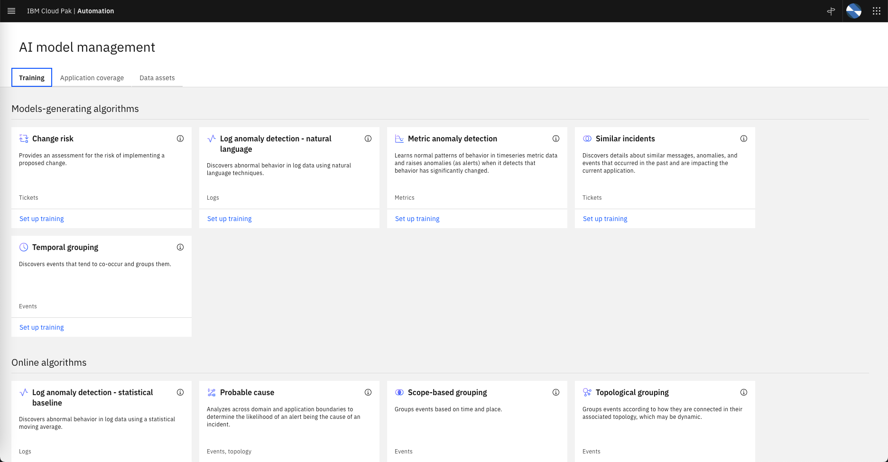
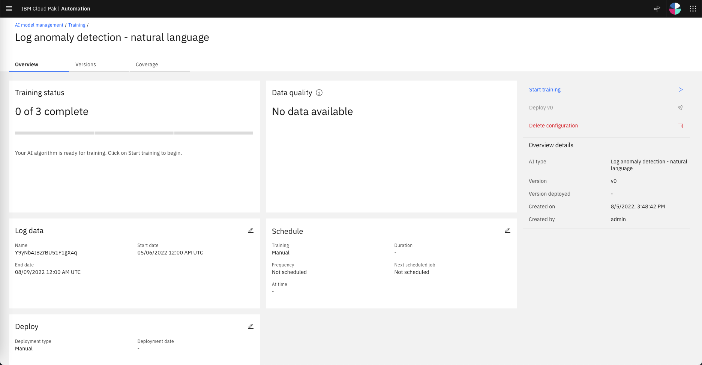
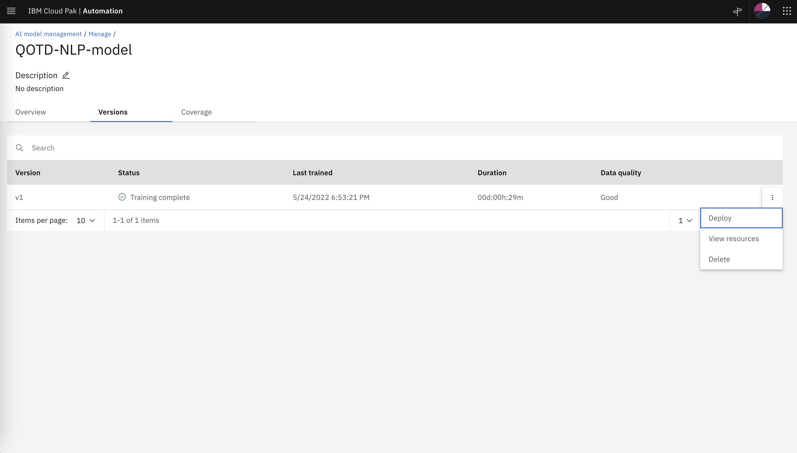

Log Anomaly Training
Recap
Lets recap what we have done so far:
-
We have defined an integration to a Log Aggregator (EFK) that its receiving logs from an application called qotd and we have pulled logs into CP4WAIOps for a period of 1 day.
-
We have defined an integration to Instana which is observing the environment where qotd is running and we have pulled every resource topology information related to this application into CP4WAIOps.
-
We have enabled one CP4WAIOps policy to create Stories.
Now we will do log anomaly training to create a model that CP4WAIOps will use to find anomalies in the logs.
Log Anomaly Algorithms
In CP4WAIOps v3.3, two log anomaly detection AI algorithms are available, each of which can run independently of the other. If both algorithms are enabled, then any log anomalies that are discovered by both algorithms are reconciled so that only one alert is generated. The severity of this combined alert is equal to the highest severity of the two alerts.
-
Statistical baseline log anomaly detection extracts specific entities from the logs, such as short text strings that indicate error codes and exceptions. The algorithm combines the entities with other statistics, such as number of logs for each component, and uses the data as a baseline to discover abnormal behavior in your live log data.
-
Natural language log anomaly detection uses natural language techniques on a subset of your log data to discover abnormal behavior.
Log anomaly detection takes large amounts of log data and trains on it to learn what is considered normal behavior for a particular component. This model goes beyond just looking at error states or frequency of metadata around log messages. Instead, it determines when something becomes an anomaly compared to what patterns it typically exhibits during normal times.
Configuring Log Anomaly Training
-
From the Home page, under
Overviewclick onAI model managementto open the AI Model Management dashboard (feel free to skip the Tour pop-up window). -
On the
AI algorithmstab, on theLog anomaly detection-natural languagetile, clickConfigure.

- Getting started: Under Data and tool connections, check that at least one connection is listed down the page.

Click Next to move to the next pane.
- Provide details: Here we provide a name and description to identify this algorithm configuration later. For Configuration name, type
QOTD-NLP-model. Leave the Configuration description empty.
Click Next to move to the next pane.
-
Select data: Specify a date range to train upon. Select
Customand specify the dates listed below. Note that from the full day of application logs that we pulled from the log aggregator, we will select the full 24 hours of data. In a real production deployment, you will tipically pull and later select up to a week of data to have a more representative model.-
Start Date
05/08/202212:00AMLocal Time (UTC -04:00) -
End Date
05/09/202212:00AMLocal Time (UTC -04:00)
-

Click Next to move to the next pane.
- Filter data: Here we have the option to filter out known anomalies in the training data by specifing date ranges to skip. In this Lab, we don't need to specify any date range to get filtered.

Click Next to move to the next pane.
- Schedule training: Here we can specify a time schedule to run the training if needed. In this Lab we will run the training manually therefore make sure that Run on a schedule is set to
Off(grey).

Click Next to move to the next pane.
- Deploy: To review the results of training before deploying the model, ensure that Deployment type is set to
Review first.

Click Done to save the algorithm configuration.
Now you will notice that the Log anomaly detection-natural language tile, is set to Configured.

Now that the Log Anomaly configuration is set, we can start the training.
Train & Deploy a Log Anomaly Model
-
From the AI model management page, click on the
Managetab to open the management section. -
Click the algorithm configuration that you just defined to generate an AI model. The overview page is displayed.

-
In the right sidebar, click
Start training. -
After a few moments, the following response is displayed:
Training successfully started. -
The AI Training tile displays various training status messages: such as
Queued.
-
You will see in the Models tile, how the wheel chart turns from red to green as diferent resources are added to the model. Its OK if the
anomalyresource name fails to get a model. There are not enough log lines that have information about this resource.
- Log Anomaly Training will typically take around 30 minutes for this amount of data. This a good time to step away and come back in 30 minutes.
- Once the training is complete, the Training status tile displays the message:
3 of 3 complete. At this point, the log anomaly models are created.

Now the last step in the Log Anomaly Training section is to deploy the model.
- Click on the Versions tab and confirm there is a model created with Version v1. Click on the 3 dots on the right and select
Deployas shown below.

- Once the model is deployed, you willsee the Status changed to
Deployedas shown below.